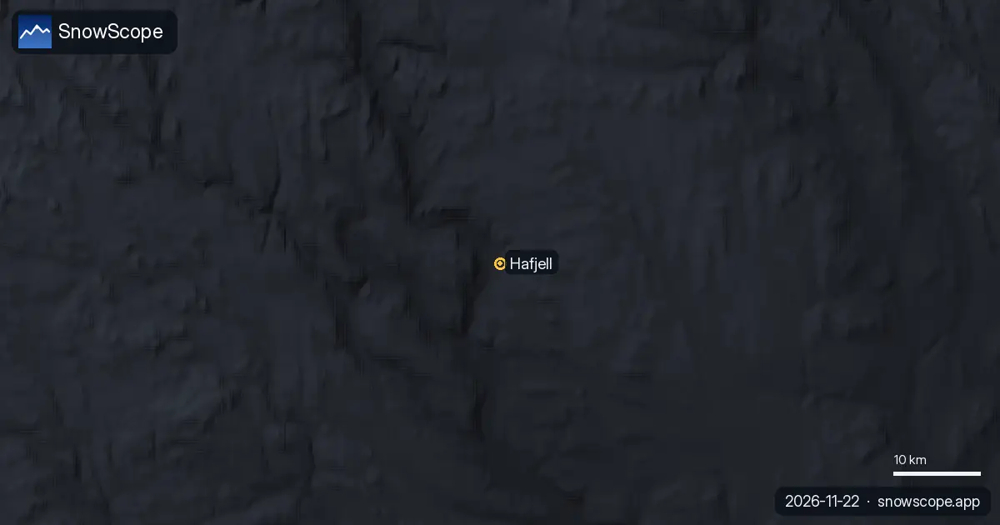

Hafjell måned for måned: når familiefjellet er på sitt beste
Hafjell er det store, snille fjellet over Lillehammer: 39 km kartlagte nedfarter og 17 heiser, fra dalen på 192 moh. til toppen på 1058 moh. Fjellet er ikke høyt, så spørsmålet familier stiller er enkelt: når er det nok snø, og når er den på sitt beste? Vår snøhistorikk fra 46 tidligere vintre svarer høyde for høyde.
Se snøprognosen for Hafjell direkte i SnowScope-appenSnødybde, puddervarsler og 3D-kartet, gratis.
Første snø i oktober, skikjøring i desember
Midt på fjellet (625 moh.) har den første snøen kommet innen 19. oktober i halvparten av vintrene, og innen 30. oktober selv nederst. Den første snøen blir sjelden liggende. Vanlig dybde i november er bare 20 cm midt på fjellet, med stort sprik fra 3 til 47 cm mellom en dårlig og en god november.
I desember blir fjellet hvitt for alvor: 50 cm midt på fjellet og 60 cm på toppen i et vanlig år. Hafjell produserer mye snø i de nedre løypene, og den kalde lufta i Gudbrandsdalen holder på den.
Januar til mars: de dype månedene
Dybden øker gjennom vinteren: 78 cm i januar, 88 cm i februar og 91 cm i mars midt på fjellet. Mars er den dypeste måneden i en vanlig vinter i alle høyder; på toppen er mars-tallet 101 cm.
Den beste enkeltuken midt på fjellet er uke 11, tidlig i mars, da 100 prosent av vintrene hadde minst 50 cm der og vanlig dybde var 92 cm.
Hvor sikkert er det? Uker med ordentlig snø
Vi teller ukene der midt på fjellet hadde minst 50 cm snø. Hafjell når det i 12 uker i ni av ti vintre, og i 20 uker i halvparten av dem. Toppen gjør det bedre: 15 uker i ni av ti vintre.
Vintertoppen midt på fjellet er 106 cm i et vanlig år, mellom 73 cm i den dårligste vinteren og 159 cm i den beste. Sist vinter toppet den på 85 cm der, under det vanlige.
April: vårskikjøring øverst
Snøen ligger lenge. På toppen er vanlig dybde i april fortsatt 99 cm, mens dalen smelter ut tidligere. Vårturer handler om den øvre halvdelen av fjellet.
Måned for måned i tre høyder
I desember har en vanlig vinter 40 cm nederst (192 moh.), 50 cm midt på fjellet (625 moh.) og 60 cm på toppen (1058 moh.). I januar har en vanlig vinter 69 cm nederst (192 moh.), 78 cm midt på fjellet (625 moh.) og 86 cm på toppen (1058 moh.). I februar har en vanlig vinter 79 cm nederst (192 moh.), 88 cm midt på fjellet (625 moh.) og 96 cm på toppen (1058 moh.).
I mars har en vanlig vinter 81 cm nederst (192 moh.), 91 cm midt på fjellet (625 moh.) og 101 cm på toppen (1058 moh.). I april har en vanlig vinter 60 cm nederst (192 moh.), 78 cm midt på fjellet (625 moh.) og 99 cm på toppen (1058 moh.).
En dårlig vinter og en god vinter
Spriket betyr like mye som midten. Midt på fjellet hadde ni av ti tidligere mars-måneder minst 65 cm og én av ti 126 cm eller mer; på toppen går samme sprik fra 72 til 139 cm.
Over hele vinteren gikk toppen midt på fjellet fra 73 cm i den dårligste vinteren til 159 cm i den beste, rundt vanlige 106 cm; på toppen fra 73 til 191 cm rundt 119 cm. Snø dekket bakken midt på fjellet i 205 dager i en vanlig vinter, og første snø la seg der innen 19. oktober i halvparten av vintrene. Dette er modellverdier for området over 46 tidligere vintre, ikke anleggets målinger; de beskriver hva man kan vente, ikke det tråkkemaskinene legger til.
Blir vintrene kortere?
Sammenligner vi de første 15 av våre 46 vintre med de siste 15, gikk toppen på fjellets høyeste punkt fra 122 cm til 118 cm, en liten endring. Antall dager med snø på bakken midt på fjellet falt fra 213 til 194: dybden holder seg, sesongen er litt kortere i begge ender.
Tips til skiløpere
- Bestill februar eller mars for den dypeste og sikreste snøen i alle høyder.
- Desember fungerer takket være snøproduksjon og kald luft; naturlig snø først og fremst i øvre halvdel.
- Snø på kartet vårt betyr ikke at heisen går: sjekk anleggets egen heisstatus før du reiser.
- Uten bil: kort busstur fra Lillehammer stasjon.
Referanser og kilder
- Wikipedia, «Hafjell», hentet 22 November 2026. no.wikipedia.org/wiki/Hafjell
Om tallene
Snøtall: SnowScopes snøhistorikk, 46 tidligere vintre (1980-81 til 2025-26) i tre høyder på skistedet, en modell av fortiden korrigert for høyde (et anslag for et område, ikke skistedets egne rapporter). Heiser, bakker og reise: kildene nedenfor, kontrollert på datoen som vises.
Offisielle snøskredvarsler: Varsom (NVE)
Siter denne rapporten
For forskning, undervisning eller presse: tallene og diagrammene kan brukes fritt under CC BY 4.0 med denne kildehenvisningen.
SnowScope (2026), Hafjell måned for måned: når familiefjellet er på sitt beste, https://snowscope.app/blog/nb/2026/11/hafjell-snow-by-month-when-to-go.html, hentet 2026-11-22
SnowScope (Atlas Labs). (2026, November 22). Hafjell måned for måned: når familiefjellet er på sitt beste. SnowScope snow reports. https://snowscope.app/blog/nb/2026/11/hafjell-snow-by-month-when-to-go.html
BibTeX
@misc{snowscope2026hafjellsnowbymonthwhento,
author = {{SnowScope (Atlas Labs)}},
title = {Hafjell måned for måned: når familiefjellet er på sitt beste},
year = {2026},
month = nov,
howpublished = {\url{https://snowscope.app/blog/nb/2026/11/hafjell-snow-by-month-when-to-go.html}},
note = {Published 2026-11-22 11:12 UTC; accessed 2026-11-22}
}· CC BY 4.0 · Metoder, data og verktøy →
Hafjell: snø og temperatur etter høyde, i vinter sammenlignet med i fjor (verktøy) →
Følg Hafjell
Gratis: en melding når nysnø er på vei, og prognosen hver morgen.